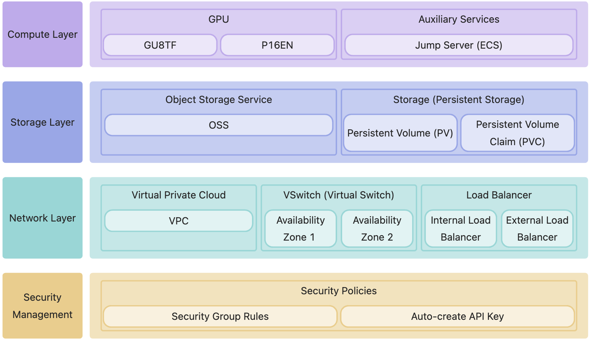
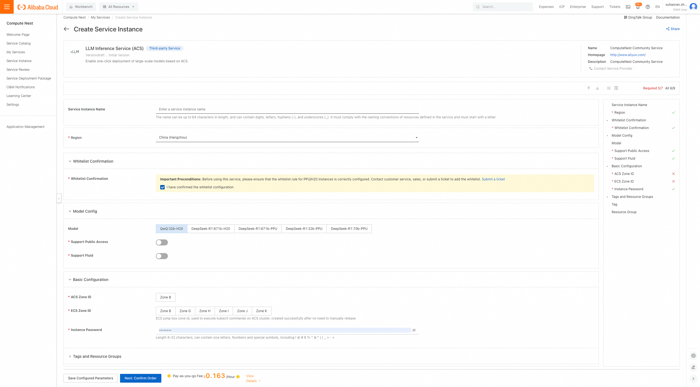
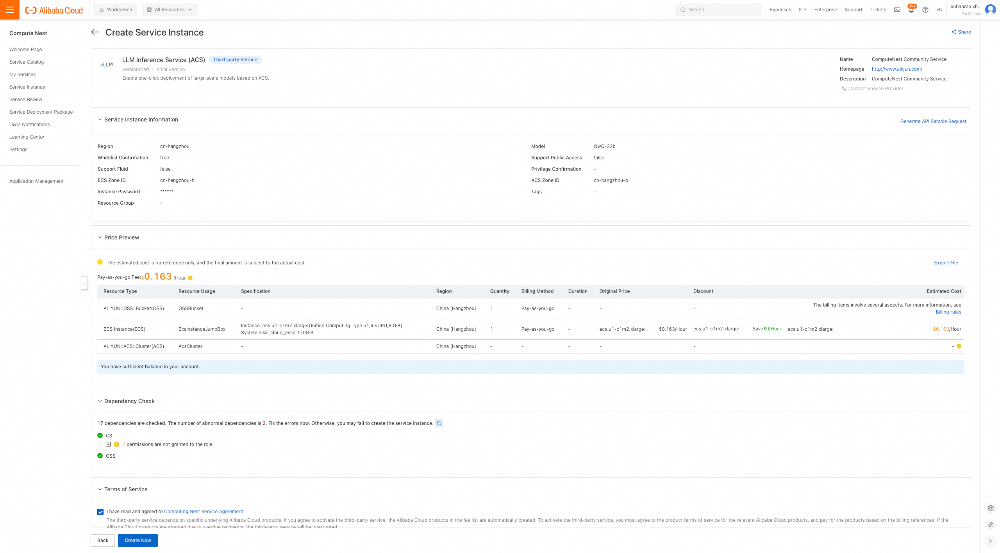
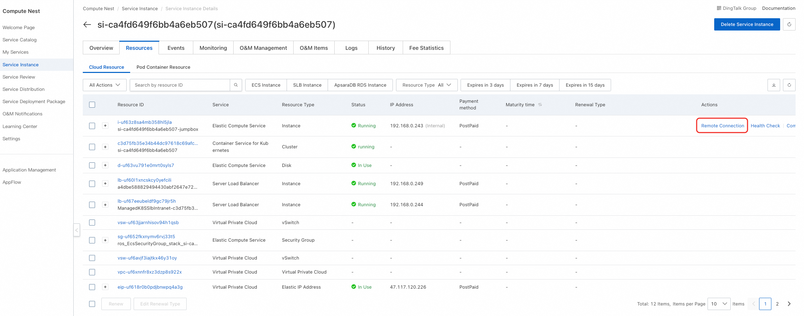
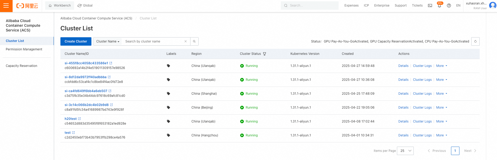
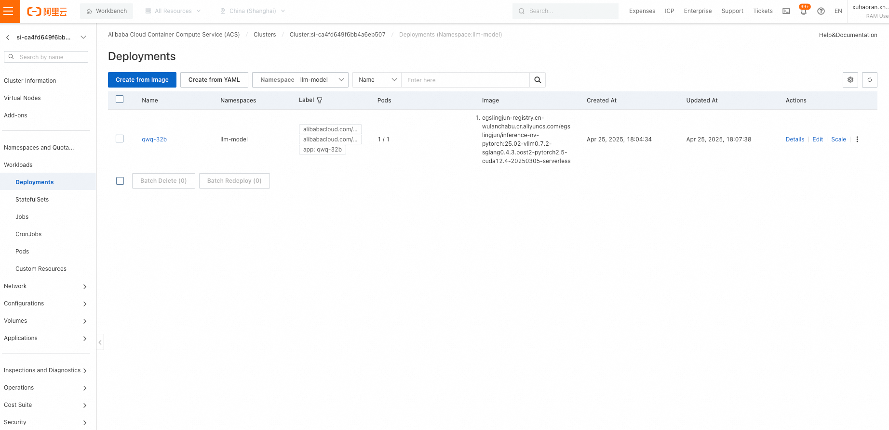
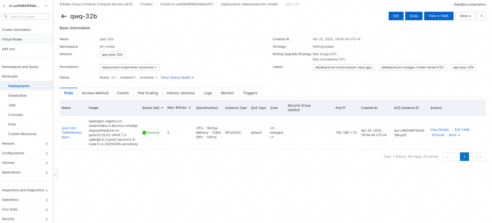

vllm Large Model Deployment Guide on ACK Cluster
Deployment Overview
This solution provides an out-of-the-box deployment of high-performance large model inference services using Alibaba Cloud ComputeNest. It is based on the following core components:
- VLLM: Provides high-performance parallel inference capabilities, supporting low-latency and high-throughput LLM inference (e.g., Qwen, DeepSeek, etc.).
- ACK Cluster: A managed Kubernetes environment supporting Serverless workloads.
After deployment, users can invoke model services via private/public APIs. Resource utilization is improved by several times, and developers need not manage underlying container orchestration or resource scheduling—only selecting the model on the ComputeNest console is required for one-click deployment.
The service supports various models and GPU types during deployment, including:
- QwQ32B
- DeepSeek-R1-Distill-Qwen-32B, GPU: P16EN
- DeepSeek-R1-Distill-Llama-70B, GPU: P16EN
- Deepseek Full-Blooded Version (671B, fp8), GPU: GU8TF
- Deepseek Full-Blooded Version (671B, fp8), GPU: P16EN
Architecture Overview

Cost Explanation
The costs for this service on Alibaba Cloud primarily include:
- ACK Cluster Fees
- Jump Server (ECS) Fees
- Notes: This ECS instance is used to deploy and manage the K8s cluster. The
/rootdirectory contains the K8s YAML resource files used for deployment. Parameters can be modified and re-deployed directly afterward. The ECS can be released after deployment if no longer needed.
- Notes: This ECS instance is used to deploy and manage the K8s cluster. The
- OSS Fees Billing Method: Pay-as-you-go (hourly) or subscription (prepaid). Estimated costs are visible in real-time during instance creation.
Required RAM Account Permissions
The account deploying the instance requires permissions to access and manage Alibaba Cloud resources. The following policies must be included:
| Permission Policy Name | Notes |
|---|---|
| AliyunECSFullAccess | Permissions to manage ECS (Elastic Compute Service) |
| AliyunVPCFullAccess | Permissions to manage VPC (Virtual Private Cloud) |
| AliyunROSFullAccess | Permissions to manage ROS (Resource Orchestration Service) |
| AliyunCSFullAccess | Permissions to manage ACK (Container Service) |
| AliyunComputeNestUserFullAccess | Permissions to manage ComputeNest (user-side) |
| AliyunOSSFullAccess | Permissions to manage OSS (Object Storage Service) |
Important: Contact PDSA to add GPU to your whitelist before deployment.
Deployment Steps
-
Click the * Deployment Link . Follow the interface prompts to fill in parameters and view cost estimates. Confirm parameters and click Next: Confirm Order*. 
-
Click Next: Confirm Order to preview costs. Then click Deploy Now and wait for completion. 
-
After deployment, access the service. Navigate to the instance details to view private network access instructions. If "Support Public Network Access" was selected, public access instructions will also be available.

Usage Guide
Private Network API Access
- Access the Private API address from an ECS instance within the same VPC. Example:
shell # Private API request with authentication and streaming (remove "stream" to disable streaming) curl http://$PrivateIP:8000/v1/chat/completions \ -H "Content-Type: application/json" \ -H "Authorization: Bearer $API_KEY" \ -d '{ "model": "ds", "messages": [ { "role": "user", "content": "Write a letter to your daughter from the future (2035), encouraging her to study science and technology to become a leader in this field. She is currently in 3rd grade." } ], "max_tokens": 1024, "temperature": 0, "top_p": 0.9, "seed": 10, "stream": true }'
Public Network API Access
If "Support Public Network Access" was selected during deployment, use the public IP directly:
curl http://$PublicIp:8000/v1/chat/completions \
-H "Content-Type: application/json" \
-d '{
"model": "ds",
"messages": [
{
"role": "user",
"content": "Write a letter to your daughter from the future (2035), encouraging her to study science and technology to become a leader in this field. She is currently in 3rd grade."
}
],
"max_tokens": 1024,
"temperature": 0,
"top_p": 0.9,
"seed": 10,
"stream": true
}'
If public access was not enabled, manually create a LoadBalancer in the cluster. Example (for DeepSeek-R1; adjust
labels.app for QwQ-32B):
apiVersion: v1
kind: Service
metadata:
annotations:
service.beta.kubernetes.io/alibaba-cloud-loadbalancer-address-type: "internet"
service.beta.kubernetes.io/alibaba-cloud-loadbalancer-ip-version: ipv4
labels:
app: deepseek-r1
name: svc-public
namespace: llm-model
spec:
externalTrafficPolicy: Local
ports:
- name: serving
port: 8000
protocol: TCP
targetPort: 8000
selector:
app: deepseek-r1
type: LoadBalancer
Re-deploying Models
Models can be re-deployed using kubectl apply on the jump server or by manually updating templates in the console.
Using the Jump Server
- In the ComputeNest console's instance resources page, locate the ECS jump server and connect via **Remote Connection ** (password-free login). 
-
Execute commands on the jump server: ```bash [root@iZ0jl6qbv1gs36mzvvl1gaZ ~]# cd /root [root@iZ0jl6qbv1gs36mzvvl1gaZ ~]# ls download.log kubectl llm-k8s-resource llm-k8s-resource.tar.gz llm-model logtail.sh ossutil-2.1.0-linux-amd64 ossutil-2.1.0-linux-amd64.zip [root@iZ0jl6qbv1gs36mzvvl1gaZ ~]# cd llm-k8s-resource/ [root@iZ0jl6qbv1gs36mzvvl1gaZ llm-k8s-resource]# ll total 28 -rw-r--r-- 1 root root 2594 Apr 16 10:04 model.yaml -rw-r--r-- 1 502 games 930 Apr 16 10:04 pre-deploy-application.yaml -rw-r--r-- 1 502 games 426 Apr 16 10:21 private-service.yaml -rw-r--r-- 1 502 games 456 Apr 16 10:21 public-service.yaml -rw-r--r-- 1 502 games 2586 Apr 14 17:30 qwq-application.yaml
To deploy QwQ32B, execute:
kubectl apply -f /root/llm-k8s-resource/qwq-application.yaml ```
Using the Console
- Enter the ComputeNest console, click Service Instances, then Resources to find the ACK cluster. Enter its console. 
- In the ACK console, navigate to Workloads > Stateful. For example, view the QwQ-32B Deployment: 
- Click the Deployment to view details, then edit parameters or update YAML directly. 
Advanced Tutorials
Customizing Fluid for Model Acceleration
Fluid is a Kubernetes-native engine for orchestrating and accelerating distributed datasets, optimizing performance for data-intensive applications like AI inference and large model training. To accelerate elastic scaling scenarios:
- Deploy Fluid following the guide: Fluid Documentation.
- Modify parameters such as
BucketName,ModelName, andJindoRuntimesettings in the YAML below:yaml apiVersion: data.fluid.io/v1alpha1 kind: Dataset metadata: name: llm-model namespace: llm-model spec: placement: Shared mounts: - mountPoint: oss://${BucketName}/llm-model options: fs.oss.endpoint: oss-${RegionId}-internal.aliyuncs.com name: models path: "/" encryptOptions: - name: fs.oss.accessKeyId valueFrom: secretKeyRef: name: oss-secret key: akId - name: fs.oss.accessKeySecret valueFrom: secretKeyRef: name: oss-secret key: akSecret --- apiVersion: data.fluid.io/v1alpha1 kind: JindoRuntime metadata: name: llm-model namespace: llm-model spec: networkmode: ContainerNetwork replicas: ${JindoRuntimeReplicas} # set replicas according to the actual model disk usage master: podMetadata: labels: alibabacloud.com/compute-class: performance alibabacloud.com/compute-qos: default worker: podMetadata: labels: alibabacloud.com/compute-class: performance alibabacloud.com/compute-qos: default annotations: kubernetes.io/resource-type: serverless resources: requests: cpu: 16 memory: 128Gi limits: cpu: 16 memory: 128Gi tieredstore: levels: - mediumtype: MEM path: /dev/shm volumeType: emptyDir quota: 128Gi high: "0.99" low: "0.95" --- apiVersion: data.fluid.io/v1alpha1 kind: DataLoad metadata: name: llm-model namespace: llm-model spec: dataset: name: llm-model namespace: llm-model loadMetadata: true
Benchmark Results
This service uses VLLM's built-in benchmark tool for testing. The test dataset is available at https://www.modelscope.cn/datasets/gliang1001/ShareGPT_V3_unfiltered_cleaned_split/files.
Benchmark Workflow
-
Create a Deployment using the
vllm-benchmarkimage to download the dataset and run tests:Parameter Description Example/Value $POD_IPPod IP running deepseek-r1 kubectl get pod -n llm-model -l app=$(kubectl get deployment -n llm-model -l app -o jsonpath='{.items[0].spec.template.metadata.labels.app}') -o jsonpath='{.items[0].status.podIP}'$API_KEYService authentication key Obtained from service instance details page (format: sk-xxxxxxxxxxxxxxxxxxxxxxxxxxxxxxxx)$MODEL_PATHModel storage path QwQ-32b: /llm-model/Qwen/QwQ-32B
Qwen3-32b:/llm-model/Qwen/Qwen3-32B
Qwen3-235b-A22b:/llm-model/Qwen/Qwen3-235B-A22B
DeepSeek-R1_671b:/llm-model/deepseek-ai/DeepSeek-R1
DeepSeek-R1_32b:/llm-model/deepseek-ai/DeepSeek-R1-Distill-Qwen-32B
DeepSeek-R1_70b:/llm-model/deepseek-ai/DeepSeek-R1-Distill-Llama-70B$SERVED_MODEL_NAMEDeployed model name QwQ-32b: qwq-32b
Qwen3-32b:qwen3
Qwen3-235b-A22b:qwen3
DeepSeek-R1_671b:deepseek-r1
DeepSeek-R1_32b:deepseek-r1
DeepSeek-R1_70b:deepseek-r1```yaml apiVersion: apps/v1 kind: Deployment metadata: name: vllm-benchmark namespace: llm-model labels: app: vllm-benchmark spec: replicas: 1 selector: matchLabels: app: vllm-benchmark template: metadata: labels: app: vllm-benchmark spec: volumes: - name: llm-model persistentVolumeClaim: claimName: llm-model containers: - name: vllm-benchmark image: kube-ai-registry.cn-shanghai.cr.aliyuncs.com/kube-ai/vllm-benchmark:v1 command: - "sh" - "-c" - | # Install dependencies yum install -y epel-release && \ yum install -y git git-lfs && \ git lfs install &&
# Download the dataset git clone https://www.modelscope.cn/datasets/gliang1001/ShareGPT_V3_unfiltered_cleaned_split.git /root/ShareGPT_V3_unfiltered_cleaned_split # Run the benchmark export OPENAI_API_KEY=$API_KEY python3 /root/vllm/benchmarks/benchmark_serving.py \ --backend vllm \ --model $MODEL_PATH \ --served-model-name $SERVED_MODEL_NAME \ --trust-remote-code \ --dataset-name sharegpt \ --dataset-path /root/ShareGPT_V3_unfiltered_cleaned_split/ShareGPT_V3_unfiltered_cleaned_split.json \ --sonnet-input-len 1024 \ --sonnet-output-len 6 \ --sonnet-prefix-len 50 \ --num-prompts 200 \ --request-rate 1 \ --host $POD_IP \ --port 8000 \ --endpoint /v1/completions \ --save-result # Keep the container running sleep inf volumeMounts: - mountPath: /llm-model name: llm-model```
-
View logs in the ACK console or directly in the container, this is a Sample Benchmark Results:
```plaintext
=========== Serving Benchmark Result ============
Successful requests: 200
Benchmark duration (s): 272.15
Total input tokens: 43390
Total generated tokens: 39980
Request throughput (req/s): 0.73
Output token throughput (tok/s): 146.91
Total Token throughput (tok/s): 306.34
---------------Time to First Token----------------
Mean TTFT (ms): 246.46
Median TTFT (ms): 244.58
P99 TTFT (ms): 342.11
-----Time per Output Token (excl. 1st token)------
Mean TPOT (ms): 130.30
Median TPOT (ms): 130.12
P99 TPOT (ms): 139.09
---------------Inter-token Latency----------------
Mean ITL (ms): 129.89
Median ITL (ms): 125.40
P99 ITL (ms): 173.20
=================================================